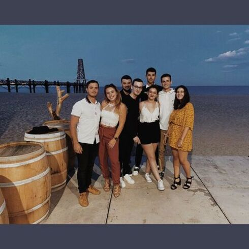
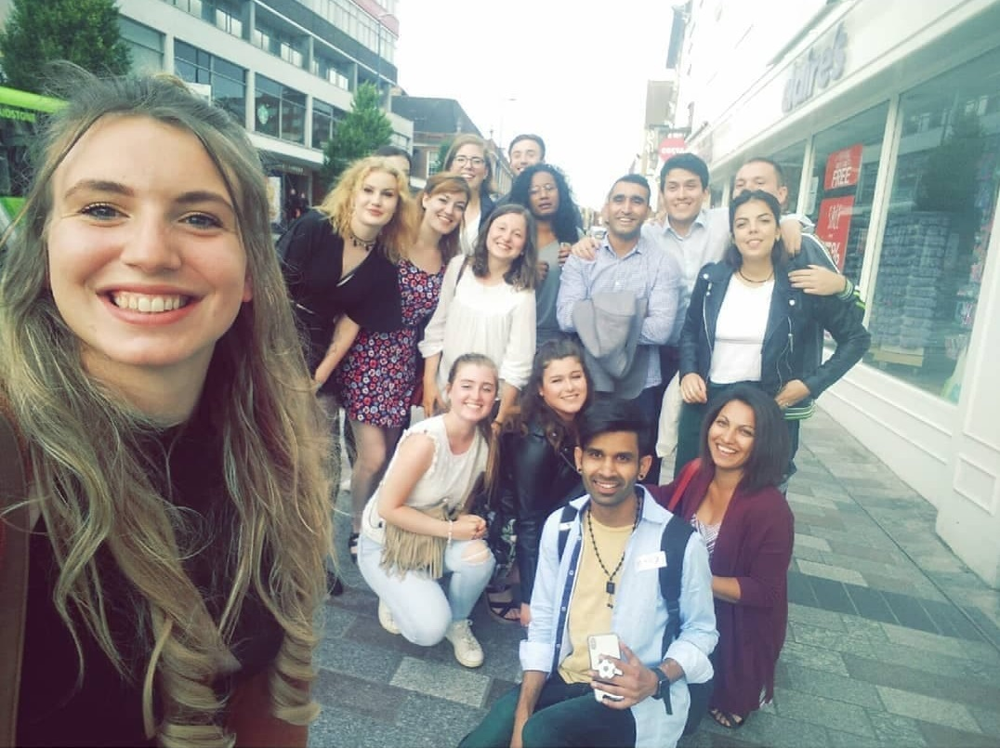
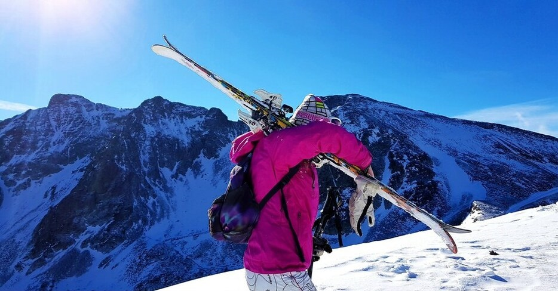
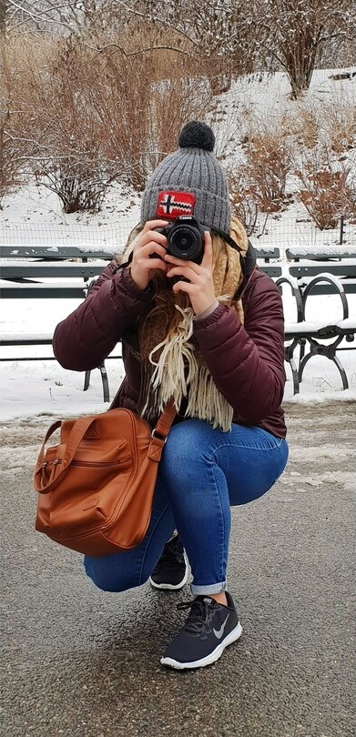
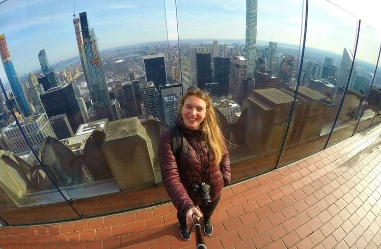
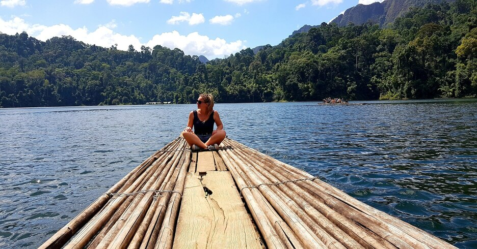
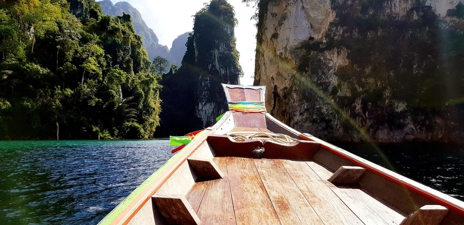
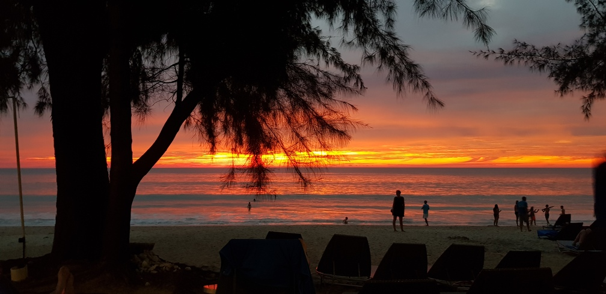

Je suis étudiante à Kedge Business school Bordeaux. L’été je travaille comme réceptionniste et chargée de communication dans un camping familiale, là où il fait chaud et bon d’y vivre.🤸♀️ ⛱️
InstagramPour tout vous dire j’habite entre terre et mer à ma gauche les Pyrénées orientales et à ma droite la mer méditerranée.Chez nous, on aime vivre et surtout profiter de l’ambiance sudiste, on adore danser, si vous vous égarez prés de Perpignan par exemple vous comprendrez exactement ce que le terme « Caliente » veut vraiment dire. On rencontre beaucoup de monde, même les Toulousains aiment venir boire un verre près de chez nous, l’adresse incontournable de « Chez biquet » à Leucate est à retenir ! L’ambiance sera au rendez-vous.🌟
Pour vous en dire un petit plus sur moi, avant que la crise sanitaire s’abatte sur nous, j’étudiais à Toulouse, là où je me suis fait de vraies amies sur qui je peux encore compter. (Mise à part quand il s’agit de garder mon verre en soirée, je le récupère toujours vide 😫 !)
Diplômé d’un Bac littéraire que j’ai effectué au Lycée Docteur Lacroix à Narbonne, je suis partie par la suite vivre un an en Angleterre en tant que fille au pair dans une famille Anglo-Russe. Cette expérience plus qu’enrichissante m’a permis de découvrir de nouvelles cultures et de perfectionner mon anglais. Dans l’intervalle j’ai obtenu mon permis de conduire ainsi que mon diplôme du BAFA (Brevet d'aptitude aux fonctions d'animateur en accueils collectifs de mineurs). J’ai par la suite décidé d’intégrer un BTS MUC (Management des unités commerciales) à Balma dans un Lycée postbac privé, où j’ai été diplômé bac + 2. Et me voilà aujourd’hui intégrant la famille Kedge au Programme grande école.
Pour tous vous dire, aujourd’hui de ce qui est de mon « Mindmap brainstorm » j’accomplis mes objectifs au fur et à mesure, les plus petits sont souvent les plus accessibles et c’est souvent ceux auxquels j’ai du mal. (On a toujours tendance à tout remettre au lendemain) Depuis le lycée je voulais entrer dans une école de commerce, je n’y croyais pas vraiment, j’ai beaucoup travaillé et mis beaucoup d’énergie dans ce projet. Aujourd’hui j’ai été acceptée à KedgeBs & c’est une grande fierté et un beau défi que je reléve.✔️
Réussir mon année L3. Finaliser mon pro-act dans mon Asso’ & augmenter mes chances de partir en UP l’année prochaine en Amérique latine pour être plus précise, là où je pourrais approfondir mon espagnol 💃
Qui a-t-il de mieux qu’une bonne raclette entre amies ? Ma passion première : la raclette ! & tout ce qui sen entoure ; le chocolat chaud, la neige, les gros pulls en laine, les feux de cheminée, l’instant cocooning que l’on retrouve après une bonne séance de Pow-pow ? Ça c’est ma passion en hiver. Pour ce qui y est de ma passion en été, habitant en Nouvelle Occitanie... je vous laisse deviner mes projets estivaux. Pour être un peu plus sérieuse, j’adore passer du temps avec mes amies, ma famille, j’aime beaucoup apprendre également, les livres ce n’est pas ma came mais j’adore toucher au monde numérique du big data. 💻
Les sports extérieurs, le vélo, la course à pied, le paddle, le ski, le fitness j’adore ! Plus jeune je zigzaguais entre le karaté et le handball. Aujourd’hui je m’épanouis seul en pratiquant des sports individuels. 😎
En plus de ce blog, je suis présente sur les réseaux sociaux. J’adore partager mes petits moments de vie. Si le cœur vous en dit, venez me rejoindre:
Comme la plupart d’entre nous, j’aime voyager. Découvrir de nouvelles personnes, culture. Je vous laisse découvrir une partie de mes voyages….
     